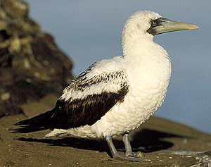
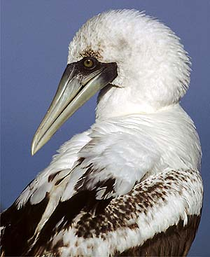

These photographs accompany records that have been recently submitted to the committee. This record has been ACCEPTED.


Masked Booby
Sula dactylatra
5 January 2002, LaJolla, SD 2002-001
© 2002
Greg Downing
Back to CBRC Rare Bird Photos